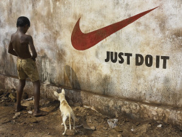

Como a vida não está fácil pra ninguém, venho através desse artigo fornecer algumas dicas para economizar uma grana e fazer melhores escolhas na hora de comprar produtos, suplementos e acessórios de musculação e também ter opções caseiras, simples e mais naturais.
SUPLEMENTOS:
1 – Compre suplementos básicos:
Nada de comprar o novíssimo “MASS POWER BULK XXXTREME SOY WITH LASERS”. Para economizar compre apenas o essencial: uma Proteína isolada boa(tem soja sem sabor, ñ trans, com 85% à R$ 21,00), um carboidrato pós-treino(malto de R$10,00 ou dextrose de R$ 20,00) e no máximo uma creatina. Coisas como Massas, Hipercalóricos, Shakes substitutos de refeição, thermogêncios, fatburners tem muito mais fama do que custo/benefício.
BCAA e Glutamina são bons, mas tb são caros. Toma uma dose de 10gr de proteína isolada ao no lugar dos aminoácidos, não vai ser a mesma coisa, mas servirá como anti-catabólico.
Dicas:
- Hipercalórico = Proteina isolada + aveia + malto sem sabor + achocolatado
- Pós-treino: Proiteina isolada + Malto
- Shake substituto de refeição = Proteina isolada + aveia + granola(ou grãos fibrosos) + fruta
- Thermogênico: Cafeina, guaraná em pó, chá verde
- Pré-treino ou disposição: 5gr de Arginina + 1gr de vitamina C, tapas na cara ou se olhar no espelho
- Anti-catabólico: 01 dose de Proteina isolada + 500mg de vitamina C.
2 – Cuidado com suplementos milagrosos e/ou suas pesquisas compradas.
Coisas como ZMA, CLA, Linolen, percussores de GH, NO2, NO3, óleo de coco, pré-treinos. Alguns desses produtos realmente funcionam e são pesquisados, mas o retorno é bem pequeno em relação aos seus custos e outros nem fazem nada. Muitas dessas pesquisas são feitas pelas indústrias em condições ideias ou com pessoas sedentárias, ai tem resultados de ganhos de massa ou perda de gordura elevada e dão o crédito exclusivamente ao suplemento.
3– Evite marcas famosas:

Pode parecer óbvio, mas as marcas mais famosas, investem mais em publicidade e por isso que são famosas, logo esse preço será embutido no produto. Mesma que a marca concorrente apresente uma composição um pouco inferior, faça as contas pra ver se vale a pena pagar mais caro por algumas gramas a mais de produto ou sua suposta qualidade superior.
REFEIÇÕES:
1 – Aprenda a cozinhar:
Lógico, se quer economizar e comer bem você tem que aprender a fazer sua comida e com o tempo aprimorar as refeições para usar menos óleo, sal e industrializados.
2 – Programe suas refeições e não coma em restaurantes!
Independente do objetivo(crescer, manter ou secar) o recomendável é sempre comer de 3 em 3 horas em quantidades adequadas, então é fácil prever quando você terá que se alimentar fora de casa e não deve ter desculpas para ficar muito tempo sem comer. Comer fora sempre é mais caro do que comer em casa, a não ser que você seja amigo do dono ou cupons de descontos.
Faça suas marmitas na noite do dia anterior ou no fim de semana e congele/resfrie. Gosto das vasilhas da ConservaMax( www.plasutil.com.br/index.php?pid=Y90XQ5ER00 ) são boas, baratas e ótimas para levar marmita pro trampo/facul/rua. Elas têm uma borda com espessa borracha de vedação e não derramam na térmica ou mochila.
3 – Compre alimentos em feiras ou centros de abastecimento.
Suas refeições devem conter grãos, cereais, verduras e leguminosas, como tudo isso vem do solo você não precisa ficar preso ao SuperMegaMercado$ e seus preços abusivos, de quebra ainda evita a tentação de comprar aquela paçoca que você come escondido antes de chegar em casa…
Não vem dizer que ser vegano é caro, grão de bico, lentilha e feijão não custam mais do que derivados de animais. Se você for obter proteínas de Goshen e Superbom só vai hipertrofiar a dívida do cartão.
Se você SÓ faz musculação não tem necessidade de um Mizuno Gel Cirrus Culmulos Nimbus Stratus 35 em cores fluorescentes e um pé de cada cor que está na (ridícula)moda e custa 800 Dilma$.
Pra pegar peso você deve estar com os pés plantados no chão, logo o ideal é uma calçado plano, tipo allstars(Nos exterior os basistas usam allstars cano curto “ChuckTailor” ou ficam de meia pra treinar) e não precisa ser caro porque não vai ter muito desgaste e musculação deve ter impacto. Não tem motivo pra ter amortecimento num tennis de academia(a não ser que seu ortopedista recomende), a suspensão do tennis vai embora pois elas são calculadas pra suportar o peso do seu corpo durante uma corrida e não uma carga estática muito maior.
Se você corre, pedala, ” crossfita” ou faz outros esportes além da musculação compre outro tennis/sapatilha apropriado pra isso. Um par de tennis pra pegar peso dura fácil uns 5 anos(o meu tem quase 6 e ainda dura bastante)
2 – Luvas:
Compra qualquer uma, vai acabar mesmo e logo ficam fedidas. Até um apoio de barra serve pra quem quer evitar os calos.
3 – Roupas e firulas:
Academia não é balada. Então veste qualquer coisa. Você vai lá pra treinar o corpo, deixa pra exercitar o ego e vaidade em outro lugar :p
Também tire relógio, anel, colar, pulseira, brinco, etc… além de ser desnecessário, tem o risco de prender nos aparelhos e te machucar.

{kind=link}
{kind=link}
{kind=link}
{kind=link}
{kind=link}
{kind=link}
{kind=link}
{kind=link}